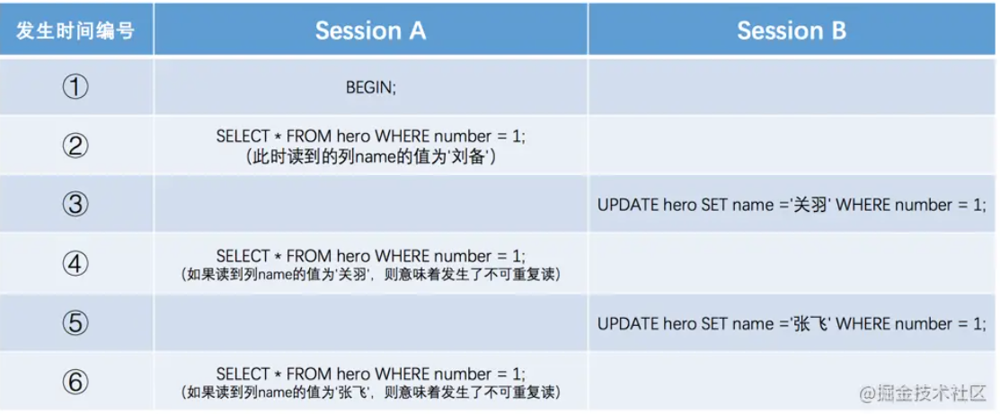
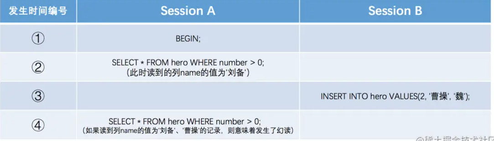
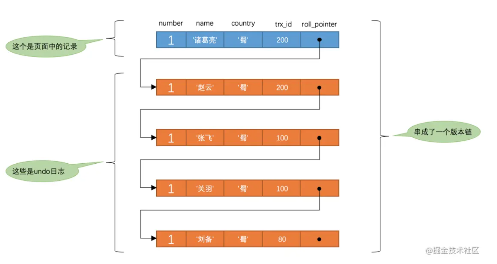

MySQL的事务隔离级别和MVCC
1. 事务隔离级别
在数据库事务中有隔离性的特性，在某个事务对数据库进行访问时，其他事务应该等待这个事务完成再能访问这个数据。但这样的处理使数据访问完全串行化，严重影响性能，故提供不同的隔离级别，用户可以结合业务需求使用。
1.1 事务并发执行的问题
访问相同数据的事务在不保证串行执行的情况下可能遇到以下问题。
脏写：一个事务修改了另一个未提交事务修改过的数据；
脏读：一个事务读到了另一个未提交事务修改过的数据；
不可重复读：一个事务只能读到另一个已经提交的事务修改过的数据，并且其他事务每对该数据进行一次修改并提交后，该事务都能查询得到最新值；

如上图，在事务 B 中提交了几个事务（不可重复读针对的是已提交事务，读到未提交事务的数据是脏读），修改了 number 为 1 对应的 name 值，如果事务 A 都能查到最新的值，就称为不可重复读。
幻读：一个事务先根据某些条件查询出一些记录，之后另一个事务又向表中插入了符合这些条件的记录（要求是插入，如果是删除仍为不可重复读），原先的事务再次按照该条件查询时，能把插入的记录也读出来。

事务 A 首先根据 number > 0 的条件查询，得到一条结果，之后事务 B 向表中插入新数据并提交，如果事务 A 使用相同的查询，得到不只一条数据，则称为幻读。
1.2 事务隔离级别
上文提到的问题根据严重性排序为 脏写 > 脏读 > 不可重复读 > 幻读，由于脏写问题过于严重，无法容忍，必须避免，而对于其他三种问题 SQL 标准设立了不同的隔离级别：
- Read Uncommited：读未提交。一个事务未提交时，做的变更能被其他事务看到；
- Read Commited：读已提交。一个事务提交之后，做的变更才能被其他事务看到，可以解决脏读问题；
- Repeatable Read：可重复读。一个事务执行过程中，看到的数据是一致的，可解决脏读、不可重复读问题；
- Serializable：串行化。对于同一行记录会加锁，可解决脏读、不可重复读、幻读问题。
MySQL 支持上面 4 种隔离级别，但与标准不同的是，MySQL 使用了间隙锁，在 Repeatable Read 级别下，可以解决幻读问题。MySQL 默认使用的隔离级别是 Repeatable Read。
2. MVCC
MVCC，Multi-Version Concurrency Control，多版本并发控制，在 InnoDB 存储引擎中用于提高数据库并发性能，针对于读写冲突，用非阻塞读的方式获取数据。
MVCC 只针对普通 SELECT 生效，对于加锁的读取不生效。利用 MVCC 读取数据被称为一致性读。
2.1 版本链
对于 InnoDB 引擎而言，其每行包含两个隐藏列：
- trx_id：每次一个事务对某行进行改动时，会将该事务 id 赋值给这个隐藏列
事务 id 不是事务启动时生成的，而是当事务对行数据进行改动时生成。
- roll_pointer：回滚指针，每次对某行改动时，将旧版本写入 undo log 中，并将这个列指向之前按的数据
undo log 会用来记录每次修改前的历史值，在 MySQL 中主要用于事务回滚和实现 MVCC。
每一行的更新记录会放到一条 undo log 中，包含更新记录和事务 id，并使用 roll_pointer 形成一个链表，被称为版本链，下文将会介绍如何使用版本链实现 MVCC。

2.2 ReadView
对于 Read Uncommited 级别的事务而言，读取版本链中最新的数据即可；而对于 SERIALZABLE 级别的事务，读写时都需要进行加锁，那么对于 Read Commited 和 Repeatable Read，就需要读取版本链中特定的版本，那么 MySQL 是如何判断某个版本对于当前事务可不可见呢？
InnoDB 引入了 Consistent ReadView （下文称作 ReadView）的概念，事务执行某个阶段会生成 ReadView，ReadView 主要包括 4 个内容：
m_ids：生成 ReadView 时当前系统未提交的事务 id 集合；
min_trx_id：m_ids 中的最小值，即未提交的事务 id 最小值；
max_trx_id：生成 ReadView 时系统应该分配给下一个事务的 id，当前系统已经创建过的事务id+1；
注：max_trx_id 不是 m_ids 的最大值
creator_trx_id：生成该 ReadView 的事务的 id。
再结合上述版本链中每个版本的 trx_id，某个版本对于当前事务是否可见便有以下判断依据：
- trx_id = creator_trx_id，即当前事务在访问自己修改的数据，那么当前事务对该版本可见；
- trx_id < min_trx_id，即生成该版本的事务在当前 ReadView 生成前已经提交，该版本对当前事务可见；
- trx_id >= max_trx_id，即生成该版本的事务在当前 ReadView 生成之后才开启，该版本对当前事务不可见；
- min_trx_id < trx_id < max_trx_id，则需要判断 trx_id 在不在 m_ids 中，在则说明创建 ReadView 时生成该版本的事务还未提交，不可以被当前事务访问，不在则可以访问。
事务会顺着版本链判断可见性，找到可见的数据为止，如果最后一个版本也不可见，意味该行对该事务不可见，查询结果不含该行记录。
2.3 生成ReadView的时机
根据 ReadView，我们可以判断某个版本对事务是否可见，那么 Read Commited 和 Repeatale Read 如何区分呢？关键在于生成 ReadView 的时机。
- Read Commited 级别下每次读取都生成 ReadView；
- Repeatable Read 只在第一次读取时生成 ReadView，之后使用同一个 ReadView，对之后的修改不可见，所以能够实现可重复读。